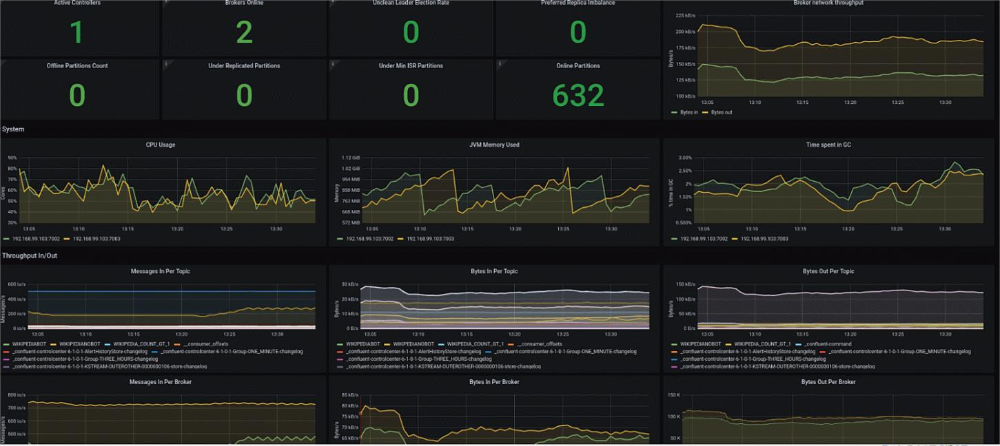

Valentine Nthigah
Data Scientist and BI Professional with experience in machine learning, data visualization, and business analytics. Passionate about turning complex data into strategic decisions.
View my LinkedIn ProfileSelected Projects in Data Science, Machine Learning, and Analytics
Stock Market Data Pipeline
Built a real-time pipeline using Apache Kafka, Spark, and NoSQL databases to support high-frequency trading analytics and dashboards.
GPS-Based Ambulance Dispatch Optimization
Designed a real-time ambulance tracking system using big data streaming and geospatial analytics to optimize emergency response.